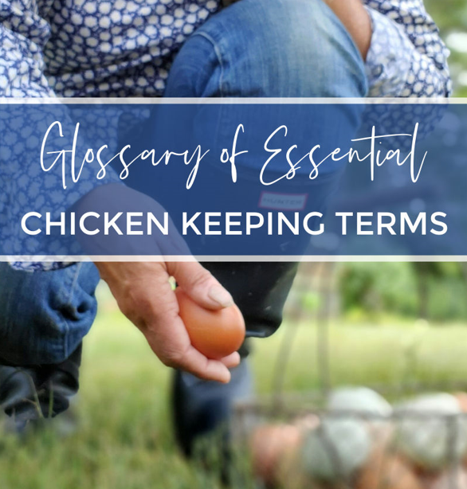

Glossary of Chicken Terms

TERMS FOR TYPES OF CHICKENS
• Bantam: Refers to small breeds of chicken. A diminutive breed of domestic fowl.
• Boiler: A chicken 6 to 9 months old.
• Broiler: A cockerel of 2 or 3 pounds, at 8 to 12 weeks old.
• Cock: A male chicken, also called a rooster.
• Cockerel: A young rooster, under 1 year old.
• Fryer: A chicken of 3 to 4 pounds, at 12 to 14 weeks old.
• Hen: A female chicken.
• Nest Egg: Literally, a china or wooden egg, or golf ball placed into the nest to encourage laying; figuratively, something set aside as security (will kill a snake if eaten).
• Point-of-lay Pullet: A young female, just about to lay, near 5 months old.
• Pullet: A young female chicken, under 1 year old.
• Roaster: A chicken of 4 to 6 pounds, over 12 to 14 weeks old.
• Rooster: A male chicken; also called a cock.
• Sexed Chicks: Separated by sex, into pullets only or cockerels only.
• Straight Run: Pullets and cockerels, mixed (unsexed or “as hatched”).
• Layer Breed: Breed of chicken that is raised primarily for egg collection.
• Dual Purpose Breed: Breed of chicken that is raised for both eggs and meat.
• Ornamental Breed: Breed of chicken that is raised primarily for show or exhibition.
• Production Breed: Breed of chicken that is raised for high egg production or meat production.
CHICKEN ENVIRONMENT
• Nesting Box: A cubicle where a chicken can privately lay eggs.
• Bedding/Litter: A material used to cover the floor/ground in confined spaces.
• Hardware Cloth: A sturdy mesh product made of metal or plastic used generally on the coop to keep them contained.
• Chicken Wire: Light wire netting with a hexagonal mesh.
• Brooder: A type of heated enclosure for raising chicks.
• Roosting: A chicken or group of chickens resting, likely on an elevated perch.
• Chicken Tractor: A movable chicken coop lacking a floor allowing flock access to the earth beneath them.
• Coop: An enclosure where chickens are kept safe and secure.
• Run: A fenced or enclosed outdoor space for your chickens.
FEATHER TYPES/TERMS
• Molting: Loss of feathers due to change in season or stress, followed by re-growth.
• Frizzle: A genetically programmed ornamental feather type causing the curling of feathers.
• Down: Fine layer of feathers that covers young birds and is found under the tough exterior feathers of older birds.
• Muff: Short feathers on the sides of a chicken's face and below the chin area.
• Saddle: Feathers in front of the tail.
• Sickle: The pair of long curving feathers on a cock's tail.
• Beard: The elongated feathers below the beak area that created a puffy look to some birds.
• Pin: A developing feather seen on maturing birds as well as after molt.
CHICKEN FEED
• Starter Grower Feed: A feed formulated for growing chicks up to laying age or 16 weeks for hens.
• Layer Feed: A feed formulated for hens at laying age to support healthy and strong egg production.
• All Flock Feed: A feed specifically formulated for mixed flocks of poultry.
• Gamebird Showbird Feed: A feed with higher protein for to promote growth in gamebirds, showbirds and meatbirds.
• Scratch: Blended and whole unfortified grains that commonly includes corn.
• Grit: Crushed rock that helps break down food in the gizzard.
CHICKEN REPRODUCTION
• Broody: A chicken that has decided to sit on and hatch a clutch of eggs.
• Bloom: A thin coating that covers an egg and prevents bacteria from effecting the egg.
• Candle: Shining a light on the backside of an egg to examine its contents.
• Internal Pip: During the hatching process, when the chick breaches the membrane into the aircell of the egg.
• External Pip: During the hatching process, the chick's first small crack or hole in the shell.
• Clutch: A group of 12 to 15 eggs gathered for hatching.
• Blastoderm: A small white bullseye on the egg yolk indicating a fertile egg.
• Blastodisc: A small white disc on the egg yolk indicating an infertile egg.
• Incubator: A machine that maintains the perfect temperatures to hatch an egg.
CHICKEN ANATOMY
• Wattle: Flesh under the beak of a chicken that is used as a heat regulating mechanism.
• Crop: Part of the digestive system on chickens that stores food before continuing on to be fully digested.
• Cloaca: An all-in-one urinating, defecating and mating mechanism located on the hind end of the chicken.
• Spurs: A sharp appendage that can grow on the legs of chickens.
• Comb: A featherless crest at the top of a chickens head.
• Vent: An opening in chickens where waste and eggs are expelled.
• Crest: The feathers protruding from the top of a chickens head.
CHICKEN HEALTH
• Wry Neck: Typically seen in chicks causing them to twist their neck, stare upwards and have trouble standing likely caused by a Vitamin E or selenium deficiency.
• Amprolium: Medication used as an aid to prevent and treat coccidiosis and can be found in some medicated chick feeds.
• Mites: Bugs not visible by the naked eye, that can live on the skin of chickens.
• Poultry Lice: Insect/parasite that can live only on chickens and their feathers.
• Dust Bath: Bathing in dirt or other substances (Diatomaceous Earth recommended) to help remove external parasites and groom plumage.
• Coccidiosis: Intestinal disease that occurs when a microscopic parasitic organism attaches itself to the intestinal lining and can cause death.
• Avian Influenza: A naturally occurring virus that effects chickens and other species of poultry.
• Fowl Pox: Viral disease in chickens and other species of poultry that causes lesions on skin (cutaneous form) and can affect respiratory tract and upper GI (diphtheritic form).
• Newcastle Disease: An extremely contagious disease affecting birds, including domestic poultry.
• Salmonella: Intestinal bacteria that is typically heard about when discussing food poisoning.
• Bumblefoot: A bacterial infection and inflammatory reaction on the feet of birds.
• Pasty Butt/sticky bottom: Describes the condition that occurs when a chicks vent is covered in feces and becomes clogged.